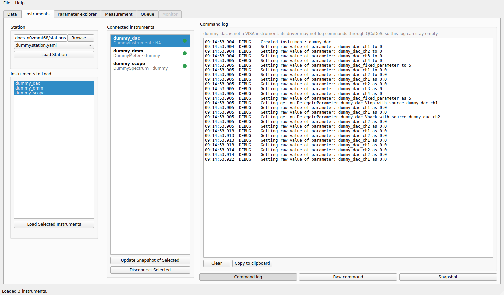
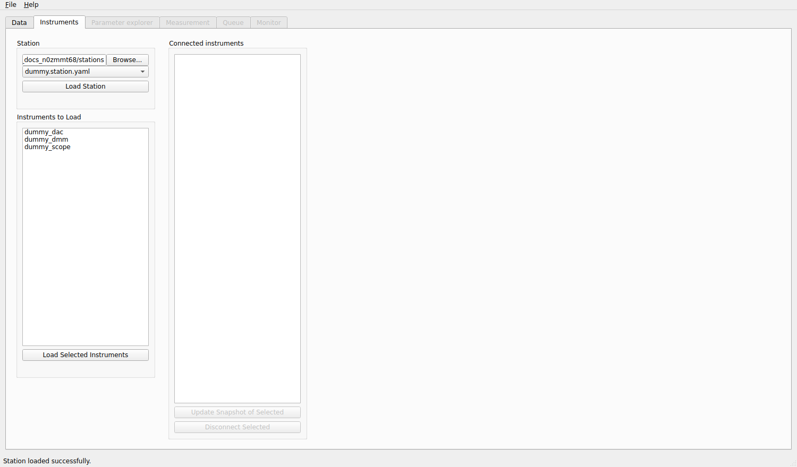
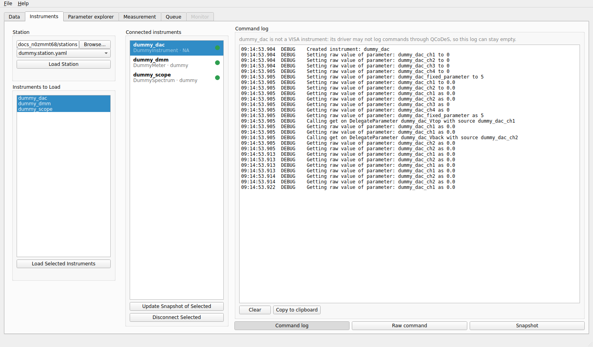
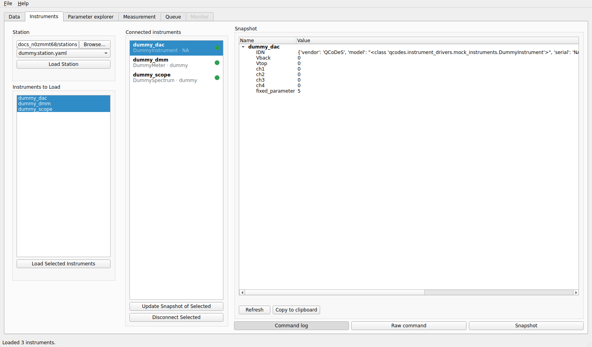

Instruments tab
The Instruments tab connects mesoscoPy to your instruments. You choose a station file, load it, and then load the instruments it describes.


Three instruments connected. The coloured dots show that they answer.
Loading a station
Under Station:
Browse… to the folder that holds your station files. The drop-down below lists every
*.station.yamlfile of the folder.Choose the file and click Load Station. This only reads the file: nothing is connected yet. The instruments it describes appear in the Instruments to Load list, and the ones you had loaded the last time you used this file are already selected.


After Load Station: the instruments of the file are listed, none is connected yet.
If the file cannot be read, the reason (usually a YAML syntax error) is shown under the buttons. See the station file for how to write one. Loading another station while instruments are connected keeps the instruments whose entry is identical in the new file (same driver, address, presets and aliases) and disconnects the others.
Loading the instruments
Select the instruments in Instruments to Load (click, or Shift-click for several) and click Load Selected Instruments. mesoscoPy imports each driver and connects. The instrument moves to Connected instruments; the parameters that the station file declared as aliases appear in the Parameter explorer as experiment parameters, and the tabs that need instruments open.
If an instrument cannot be loaded, the message under the list says why (a wrong address, a missing driver package, a device that is busy). The other instruments are still loaded.
The connected instruments
Each connected instrument shows its model, its serial number and a coloured dot:
green: the instrument answered the last check (a
get_idnrequest, repeated every few seconds in the background; the readings of the Monitor count as a check too);red: it did not answer. Hover over the dot for the time of the last check and the error.
An instrument that is in use by a measurement is not asked: the check comes back when it is free.
The buttons under the list:
- Update Snapshot of Selected
Reads every parameter of the selected instruments again. QCoDeS stores the last known values in the snapshot saved with each run, so do this after you changed something on the front panel of an instrument.
- Reconnect Selected
Appears when an instrument stops answering. It closes the instrument and loads it again from the station file. The experiment parameters changed by the program that belong to it are first brought to 0 (see Safety), unless the instrument is not answering.
- Disconnect Selected
Closes the instrument and removes it from the station. The experiment parameters of that instrument that the program has changed are first ramped to 0, at their maximum ramp rate, with a progress window. It is refused while a measurement or another action uses the instrument.
Right-click an instrument for a menu with Update snapshot, Disconnect, and Save state … to file and Restore state … from file / from a run, which write and read all the parameters of the instrument.
The instrument panel
Select a single instrument and a panel opens on the right with three pages, chosen by the buttons at the bottom:
- Command log
The commands that QCoDeS sent to the instrument and the answers it got, as they happen. It helps to see what a driver really does. Not every driver logs its commands (a simulated instrument for instance).

- Raw command
Type a command, then Ask (send it and read the answer) or Write (send it). Only for VISA instruments. Raw commands go straight to the instrument: the safe limits, the validators and the ramp rates do not apply, and they are refused while a measurement runs.
- Snapshot
All the parameters of the instrument with their last known values.
